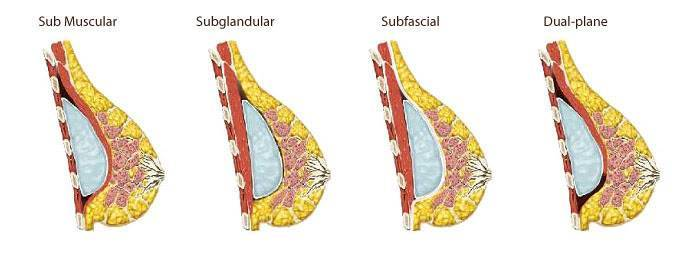

Breast augmentation is a surgical operation which relates to reconstructive and aesthetic surgery. Can occur both for aesthetic reasons and for medical reasons (for example if the female breast malformed or should be restored after amputation).
Breast Augmentation – surgical procedure aimed at change of the form and size of a woman’s breasts using silicone implants (breast endoprosthesis) or own fat (lipofilling breasts). For today breast enlargement – one of the most popular and sought-after surgical procedures in plastic surgery.
However, it is important to remember that any aesthetic mammoplasty should be carried out at the end of puberty of girl , when breast gets its complete form. Equally, this situation is true for girls who want to do a breast augmentation.
With rare exceptions, it is advisable to perform surgery in time for the complete formation of the breast, because pregnancy and childbirth can significantly affect its shape and volume.
The most common breast augmentation testimonials are:
- small size of the breast;
- postpartum deterioration of shape and volume;
- congenital or acquired breast asymmetry.
Anatomy and physiology of the breast

Anatomy and physiology of the breast
Female breast – paired glandular organ that covers the front part surface of the chest, and occupies a position between the second and seventh ribs.
A number of factors have a significant impact on breast contour: the shape of the chest, the shape of the underlying muscle and the degree of their development, the thickness of subcutaneous fat and the amount of fatty tissue in the breast itself, the state of the facial support system (Cooper’s ligamentous apparatus), the properties of the skin that covers the mammary gland and others.
The mammary gland has a complex structure and consists of: the skin, a thin layer of subcutaneous fat, ferruginous, fat and stromal tissue.
Gland tightly adjacent to the skin because is its derivative. Appearance and contour of the breast is largely determined by the properties of the skin – the thickness and elasticity. The quality of the skin may change under the influence of hormones, sun exposure, radiation therapy, weight fluctuations, etc.
With age, the skin is stretched, especially in the lower chest and around the areola. It becomes thinner and loses its elasticity. In parous women are often marked skin stretch marks (striae). The thickness and elasticity of the skin is the most important criteria when planning surgery. The most delicate skin is in the area of the nipple-areola complex.
The breast tissue is covered by superficial fascia on all sides, like a holster. Fibrotic bands come from deep leaf of the superficial fascia through the parenchyma of the gland as partitions, and are fixed to the deep layers of the dermis. Directly below the dermal layer, the fibers are numerous and have a cellular structure in which there are segments of adipose tissue.
In the deeper layers of the parenchyma of the gland, the fibers diverge and separated segments of gland, and accompany the blood vessels and milk ducts. This fascial framework of gland called supporting ligaments of Cooper or Cooper system. Cooper ligamentous system largely affects the breast contour. Supporting ligaments also provide communication between the gland and deep muscle fascia. In the fusion of both leaves of the superficial fascia with deep muscle fascia forms the inframammary fold.
Supporting Cooper’s ligaments can stretch with time, thinning due to various reasons – pregnancy, weight fluctuations, etc. This can lead to excessive mobility of the breast and the development of ptosis, when mammary gland hangs over the inframammary fold. Usually in women under 40 years in the breast is a little adipose tissue, and a lot of dense stromal and glandular tissue. With age increases the amount of fat and breast becomes soft, which is often observed at menopause.
The mammary gland covers a significant portion of the outer surface of the front muscles of the chest. First of all, it’s big and small pectoral muscles, serratus anterior and external oblique muscles, the rectus abdominis. Anatomically and functionally, these muscles are inextricably linked with the breast, as blood vessels and nerves pass through them. They provide a blood supply and innervation of the breast.
Breast implant choices
Photo of different types of breast implants
Breast augmentation is done using silicone implants. Characteristic of any implant includes the following basic criteria: the volume, shape, shell, filler. Prostheses of different shape and volume are characterized by the following parameters: the width of the base, the height of the base and projection. From these parameters differ prostheses of round and anatomical shape; low-profile, medium, high and very high.
Breast augmentation shapes
The shapes of implant are – round and anatomical (teardrop). The highest point of the projection at the round implants is at the center. Round implants provide a more filled upper pole of mammary gland. Anatomical implants have the form of drops. This contributes to giving a woman’s breasts a more natural form. Such implants have the highest point of projection in the bottom third.
Fillers for breast enlargement
Silicone filled breast implants
Silicone filled breast implants
These implants are filled with highly cohesive silicone gel (non-flowing gel, has shape memory). Even with rupture of the coating, the gel remains in place, the implant does not deform. Completely safe for breast and body as a whole. Carried out researches confirmed the safety of silicone implants. For such implants is issued a lifetime warranty on the shell rupture.
Saline filled breast implants
Saline filled breast implants
They are also called salt for the reason that the saline is 0.9% sodium chloride solution in water. Technology of filling the implant after implantation allows to make breast augmentation through a smaller incision and avoid unpleasant complications of silicone implants.
Saline filled implants stretch and attenuate the skin more than the gel analogs. Furthermore, due to diffusion of saline through the shell of the implant, with time they lose their shape and must be replaced.
Saline implants are very similar to plastic bags filled with water. This causes two main disadvantages of such prostheses. Firstly, saline on its consistency is much thinner than in fat tissue or silicone in breast implant. If the filler is more dense then chest is free from wrinkles on the upper side of the breast – ie in a decollete zone.
Hydrogel breast implants
But saline implants can cause the appearance of wrinkles – when you lean or lie flat, then in the neckline appear quite deep wrinkles. Secondly, the water in saline implants with shaking (walking, running, jumping, aerobics or dance) provokes not too pleasant feeling of “gurgling”.
Hydrogel breast implants
Hydrogel breast implants – breast implants filled with gel of carboxymethyl cellulose (biogel). Biogel – is 3.7% carboxymethylcellulose solution – a natural polymer derived from cellulose. He has the property of bio resorbability. In case of damage of the implant shell it decomposes into glucose, carbon dioxide and water.
Smooth surface of breast implants
Types of breast implants surface
There are breast implants with a smooth and textured surface. Unlike round implants, the rotation on the axis of the anatomical implants can lead to a change in shape of the breast and the need for surgical revision. For this reason, anatomic implants are textured, which allows them to adapt well in the tissue cavity and reduce the risk of twisting on axis.
But according to observations of British researchers, breast implants with a textured surface provoke a new type of breast cancer. According to scientists, more rough surface of the implant is the perfect breeding ground for bacteria, in which appear tumor. Doctors believe that every woman should be warned of high risk of the disease before cosmetic surgery.
Textured surface of breast implants
Around the breast implant is always formed fibrous capsule what is normal physiological reaction of the organism on getting foreign body into the soft tissue. In some cases, the capsule may become too dense and begins to squeeze the implant what may cause deformation of breast contour.
This is called capsular contracture. The occurrence of capsular contracture happens more often when using smooth implants. Implants with a textured surface reduces the risk of capsular contracture, because the capsule invades into texture of a the shell. There are also implants with a polyurethane surface. The use of such implants minimizes the likelihood of rough capsule.
Breast implant placement
Breast-implant-position Subglandular and Submuscular
Surgeons distinguish these types of implant placement in relation to the pectoralis major muscle during breast augmentation surgery:
- Subglandular placement – implant in the space between the tissues of the breast and the pectoralis major muscle;
- Subfascial placement – the implant is placed under the gland, but in the space between his own fascia of the pectoralis major muscle and muscle;
- Sub Muscular placement – implant completely from all sides covered with muscles;
- Dual-plane placement – the implant is placed in the space between the pectoralis major muscle and rib cage such a way that the upper pole of the implant was covered with muscle, and the bottom was covered only with breast tissue. Created the so-called “double pocket”.

Breast augmentation incision types
Following options of surgical access are available for breast enlargement:
- Inframammary – in the crease under the breast. The most commonly used throughout the world, provides a very predictable results;
- Periareolar – around the nipple.
Used in certain cases, more often in women who gave birth, because it can disrupt the function of lactation; - Transaxillary – in the the armpit;
- Transumbilical – through the navel. This technique surgical access is suitable only for intraoperative saline filled implants;
- Transabdominal – combined during abdominoplasty, is extremely rare access.
Medical lab tests before breast augmentation:
Before breast augmentation you should get tested. The term of medical survey and lab tests is 1-3 days (depending on the time which you have). Ultrasound of the breast is required.
Best place for breast augmentation surgery:
Breast augmentation surgery is performed in a hospital. The residence time in the hospital is about 1-3 days.
Anesthesia for breast augmentation:
General anesthesia.
The duration of breast augmentation surgery:
1-2 hours.
Breast augmentation incision types and details of breast augmentation:
Types of incisions for breast augmentation – around the areola, in the crease under the breast, in the armpit. The implant can be installed under the gland, under the pectoralis muscle, either in conjunction of spaces. Immediately after surgery a compression garment is worn. It will need to be worn for 4-6 weeks.
What to expect after surgery:
Discomfort, swelling, limitation of range of motion. The sutures are removed from 5 to 10 days, depending on the type of surgical incision. It is possible to start work after 5-10 days. Back to sports you can after 1-1,5 months.
Risks of breast augmentation:
Partial loss of nipple sensitivity, displacement of the implant, asymmetry, inflammation, hematoma, capsular contracture.
The duration of the effect after the surgery:
The results of breast augmentation surgery may be permanent. Sometimes, after 10-15 years it requires additional correction of soft tissue of breast.